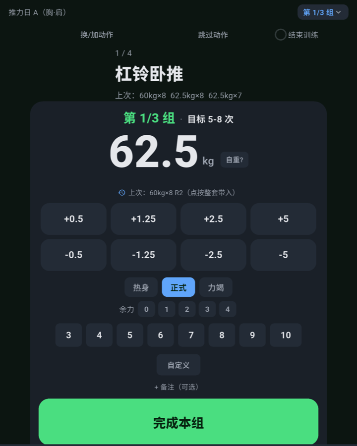
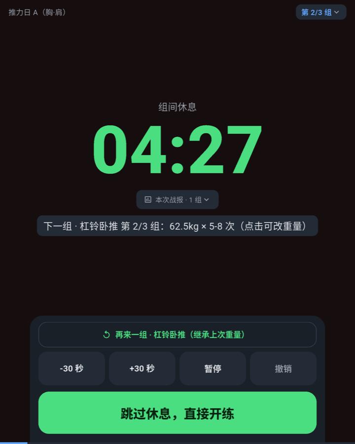
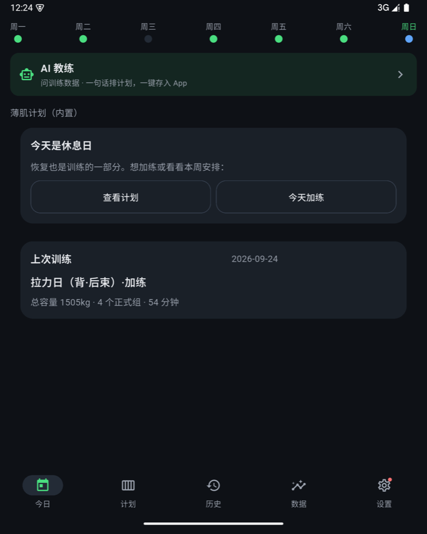
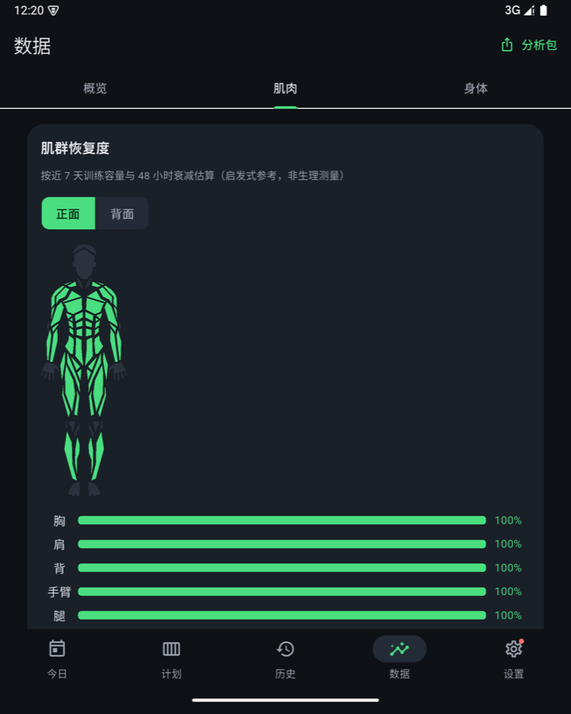

LeanLift
A strength training timer & log that runs entirely on your phone
No server · Data never leaves the device · Chinese & English · Minimal & distraction-free
Android 8.0+ · Free & open source · No ads · No accounts
A strength training timer & log that runs entirely on your phone
No server · Data never leaves the device · Chinese & English · Minimal & distraction-free
Android 8.0+ · Free & open source · No ads · No accounts
The hard part of training is logging consistently and staying focused mid-set. Other apps want your sign-up or your server — LeanLift keeps everything on your phone.
Works out of the box. Nothing to host, no sign-up, no pop-ups.
Training data lives in local SQLite. No cloud, no one else's database; export and import are yours.
The training screen shows three things only: current exercise, set target, countdown. Haptics confirm each set.
The UI and all 157 exercise guides come in Chinese and English, following the system or switched manually.
| LeanLift | Cloud / self-hosted | |
|---|---|---|
| Server | None | Yours or someone else's |
| Data ownership | 100% on-device | Someone else's database |
| Accounts | None | Registration systems |
| Offline | Everything works | Core features need network |
| Cost | Free & open source | Subscriptions / server bills |
Only three optional touchpoints ever use the network: calendar sync, AI features (your key), update checks.
Inspired by Alan Shao's lean-theory: low body fat, training 3× a week, progressive overload — turned into plain, handy tools.
Full-screen set logging, automatic rest countdowns that survive lock screens, PR detection, a forgot-to-stop guard, plate math, pain notes, and a 20-minute short session for busy days.
Automatic add/back-off calls with a written "why" next to every target; training blocks auto-deload, comebacks after 2+ weeks off start at 85%, and plateaus get three clear exits.
A Sunday notification with completion, progressing and stalling lifts, neglected muscles, body-weight pace and one action — fully functional without AI.
186 exercises with bilingual form cues, 175 with start/end photos, 14 core lifts with silent demo videos — readable mid-workout.
Any standard BLE strap just works: live HR on rest screens, a nudge to rest longer when it's still high, tap for calories burned and the HR curve, AI analysis after the session.
Weekly/monthly volume·sets·intensity, activity heatmap, 1RM and strength-to-weight, weekly per-muscle set targets, recovery heatmaps, body metrics, kg/lb switch.
Bring your own key: conversational plan building, a coach over 8 weeks of real data, automatic weekly AI reports, HR analysis — plus a LAN read-only bridge so desktop AI can query your phone. See the AI section below.
A snapshot after every workout (7 daily + 4 weekly), restore with preview, a gentle nudge after 14 days without a manual export. Full CSV/JSON export as before.
Training days on your calendar, summaries backfilled after sessions, offline queue — straight to the official API.
AI is an amplifier, not a foundation: without a key everything above works as-is. Add an OpenAI-compatible key (local Ollama works too) and it grows on top of your own data.
Chat your requirements, change them any time ("move Wednesday"), get the full plan every turn — nothing lands in the app until you confirm exercise by exercise.
Automatically carries your last 8 weeks of real training and impressions into one-tap phase reviews and Q&A. Its persona is hard-wired to never diagnose injuries or suggest training through pain.
After the local recap is built, optionally have AI turn it into prose, delivered with the weekly notification. Generated once in the foreground — never in the background; falls back to local without a key.
A LAN read-only bridge (MCP): on your home Wi-Fi, Claude/Cursor can query the phone directly — "is my bench stalling?" Paired once, read-only, data never leaves your LAN.
Keys stay on-device; requests go straight to the provider you choose. No middleman server.
openGym (DuarteSantos8/openGym) is a project we respect on the same side: self-hosted, your data, clear per-muscle views — parts of LeanLift's analytics borrow its ideas. But the two put "data ownership" in different places, and the day-to-day picture differs completely.
| LeanLift | openGym (self-hosted) | |
|---|---|---|
| Deployment | None: install and train | Needs a server / NAS you deploy and maintain |
| Client | Android app designed for "phone in hand mid-set" | Browser |
| In-workout | Full-screen three-element focus, lock-screen countdowns, DND, haptics | Mostly web-form logging |
| Coaching | Overload engine + blocks/deload + comeback taper + weekly recap | Logging & analytics first; training method via templates |
| AI | Optional built-in: planning / coach / weekly report / HR analysis / LAN bridge | No built-in AI |
| Data ownership | 100% on the phone + auto backups + full export | 100% on your own server |
| Ecosystem | Lark calendar, bilingual, BLE heart rate | Import from FitNotes / Strong / Hevy |
One line: openGym is a training archive on your own server; LeanLift is a coach in your pocket — zero deployment, focus mid-set, and an AI that knows your data.






Android 8.0+ · Overwrite-installing keeps your data · In-app one-tap updates (one-time authorization)
iPhone users: Android-only officially; see the AI-BUILD-GUIDE to adapt it yourself.
Yes. Training, logging, analytics, plans, the weekly recap and auto backups all run locally. The three networked extras (calendar, AI, update checks) are all optional.
Local SQLite on your phone. A snapshot is saved after every workout (7 daily + 4 weekly), and Settings offers full JSON export/restore and CSV export — copy the archive to move devices.
Only when you actively use an AI feature, and only the needed content (e.g. an 8-week summary) goes directly to the provider you configured. Keys stay on-device; there is no middleman server. The weekly AI report is off by default and, once enabled, generated once in the foreground.
Want zero deployment, focus mid-set, an overload engine and optional AI — LeanLift. Already running a NAS/server, prefer browser management, or migrating from FitNotes/Strong/Hevy — openGym is great too.
Settings → App Update, one tap. Or download the latest APK from this page and overwrite-install — data survives.
Nothing. MIT open source, no ads, no in-app purchases, no analytics.